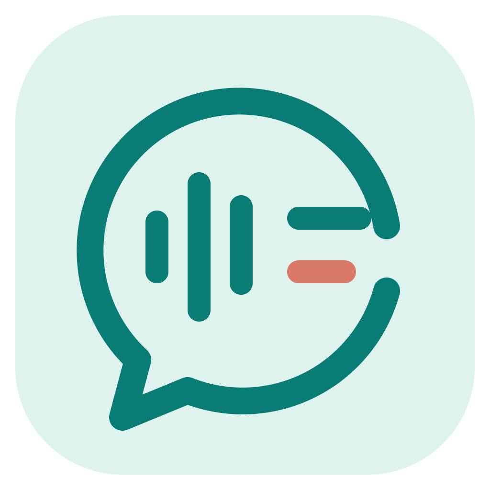

Open Voice Input
正在检查 API Key...
语音输入
正在检查今日输入
—次
— 字本周输入
—次
— 字尚未配置语音识别
实时会议转录
麦克风 / 系统声音最近记录
会议 / 文件转录
暂无会议或文件转录记录
语音输入法记录
暂无语音输入记录
快速上手
1 / 3- 语音识别
- 表达整理可选
- 麦克风与快捷键
连接语音识别
尚未测试
表达整理
未启用时使用快速模式，只进行语音识别。
麦克风与快捷键
尚未测试
Enter 停止 · Esc 取消
就绪
按已设置的全局快捷键开始录音。
设置
语音识别
01 工作方式
02 麦克风与快捷键
03 语音识别供应商
MiMo · 语音识别
用于短语音、文件转写、会议分段转写与音频核对；独立于语言处理连接。Token Plan 请填写 token-plan-cn 地址和 tp- Key。
阿里云百炼 · 语音识别
用于 Qwen ASR、Fun-ASR 和会议实时识别；Qwen 文本整理与摘要模型请单独配置语言处理供应商。
04 识别模型
表达整理设置
语言处理供应商
尚未添加文本供应商
连接详情
选择一个供应商
- API 地址
- 未配置
- 协议
- —
- API Key
- 未配置
- 使用位置
- 未分配
模型目录尚未同步
模型能力参数
表达整理模型
仅此模型使用以下自定义连接，不会修改 OpenAI 或 MiMo 配置。
语言处理供应商
尚未选择供应商
仅此模型使用以下自定义连接，不会修改 OpenAI 或 MiMo 配置。
默认处理
基础不上传；增强上传系统轨到 OSS 做说话人分离。
会议转录模型
阿里模型提供实时预览；MiMo 使用非实时分段转写作为备用。
文件转写 ASR
按供应商使用 MiMo 或阿里云连接；不进入会议增强/OSS 流程。
导入完成后点击“生成原文”，会使用这里选择的模型；完成后可点击“生成摘要”。
增强 · Fun-ASR
仅增强模式系统轨；统一使用阿里云连接。
增强 · OSS
私有对象上传；成功后删除。凭证仅运行时。
语音识别历史记录仅保存在本机，不会加入后续识别或整理的上下文。
识别原文
整理结果
Open Voice Input
当前版本 —
等待检查
检查 GitHub Releases 获取新版本
不会上传 API 配置、录音或转录内容。
文件与模型设置
独立文件处理
还没有选择文件
支持音频和视频；视频会先提取音轨。
未选择
当前 ASR：—
选择一个文件后，会在本地建立独立记录，再按当前文件 ASR 配置转写。
第一步 · 原始转写
尚未开始
—
第二步 · 生成摘要
尚未开始
选择文件并开始转写后，结果会显示在这里。
会议实时转录
实时会议
历史记录
选择以前的实时会议后，可查看原文和音频，并重新执行 MiMo 复核、校订或摘要。
暂无实时会议记录。
会议设置与保存位置
原文保存位置
本页计时00:00
待识别 0 段 · 失败 0 段
每 30 秒自动保存 · 尚未保存
原始转写
尚无转写内容
实时草稿
未生成摘要